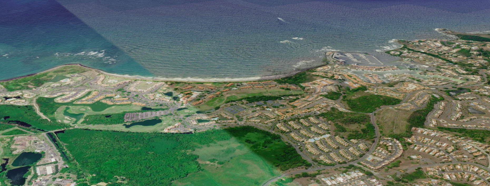
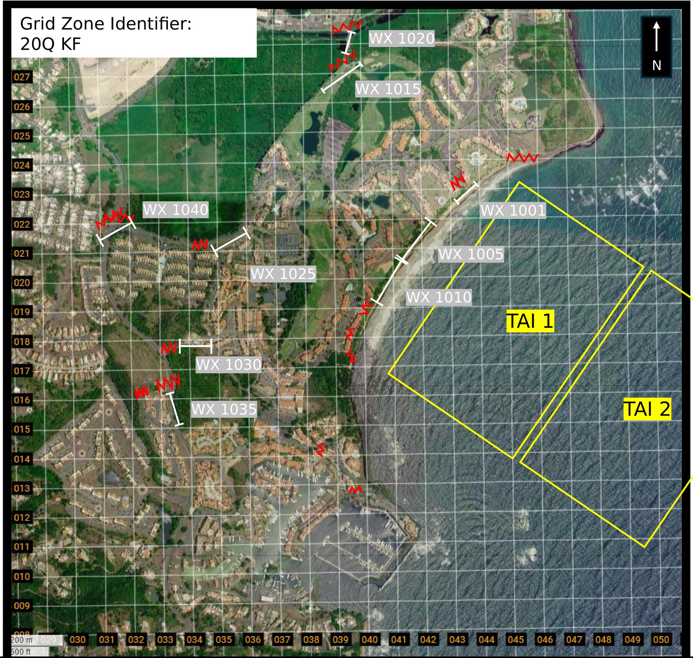

Map data © 2026 Google, Data SIO, NOAA, U.S. Navy, NGA, GEBCO, Airbus, Data LDEO-Columbia, NSF, Landsat / Copernicus, Maxar Technologies, CNES / Airbus
Dragonfire FSCC All stations, this is Dragonfire FSCC, radio check, over.
Steel Rain Dragonfire FSCC, this is Steel Rain, roger, loud and clear, over.
Anvil Dragonfire FSCC, this is Anvil, all firing units are up and laid, over.

Map data © 2026 Google, Data SIO, NOAA, U.S. Navy, NGA, GEBCO, Airbus, Data LDEO-Columbia, NSF, Landsat / Copernicus, Maxar Technologies, CNES / Airbus
The Fire Mission Sim needs a wider screen. Open it on a laptop or a tablet in landscape.